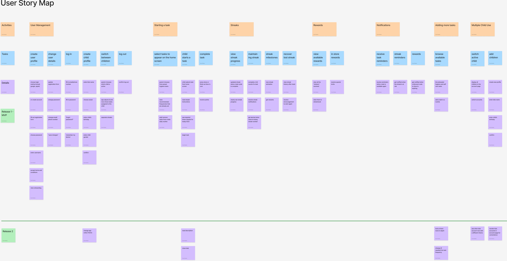
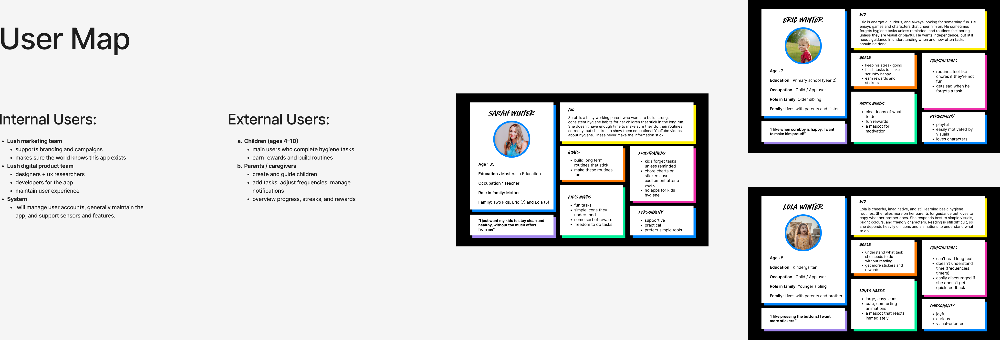
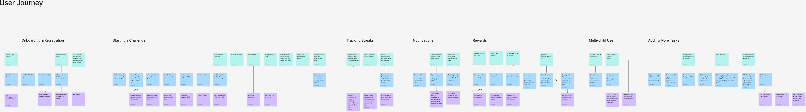
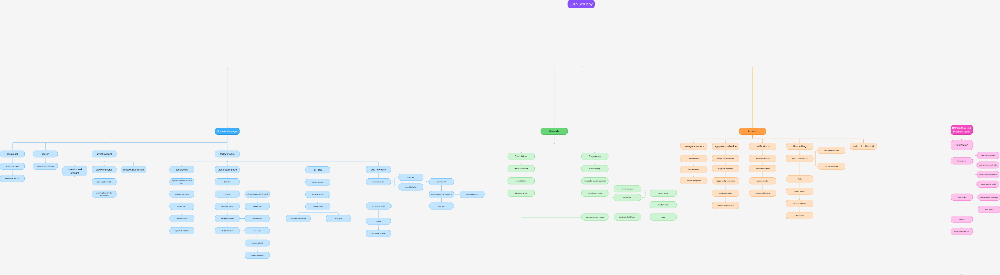
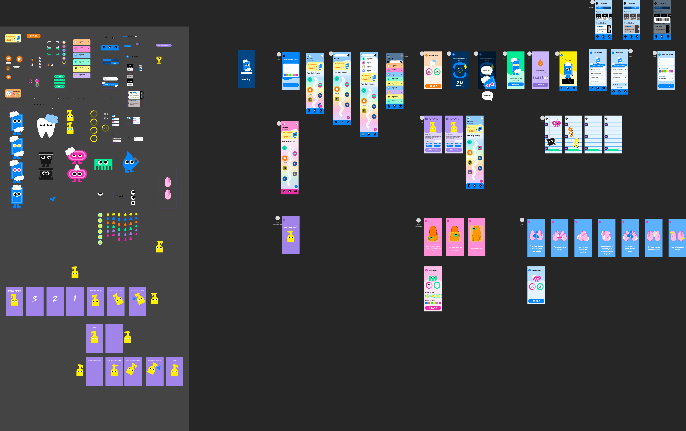
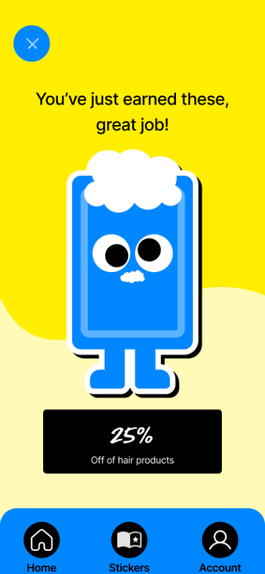

Research
Brand and competitor research, a survey with 22 respondents and interviews with 5 parents helped me frame the problem and define the concept.
University project · Digital Product 3
A playful hygiene companion for children aged 4 to 10, turning daily routines into small, guided challenges with a friendly mascot, positive feedback and rewards that connect back to Lush stores.
The team build is available to preview, but sign in currently needs a fix. Explore the design in the Figma prototype instead.

Brand and competitor research, a survey with 22 respondents and interviews with 5 parents helped me frame the problem and define the concept.
I completed all of the research, UX, visual identity and interface design in semester one. In semester two, we worked as a team to refine screens, add features and test the experience, with me as Product Owner.
Our semester brief was to choose a company we resonated with and develop an idea that could expand its brand. I chose Lush because I connected with its ethical values, distinctive voice and willingness to stand behind strong opinions.
I loved working on a kids’ app. Its colorful, playful world felt close to my own design style, giving me room to create characters, explore motion and make everyday tasks feel more inviting.
Figma · FigJam · Adobe Illustrator · After Effects
Vue · Supabase · VS Code · GitHub
The idea, the audience and the route from daily routine to real world reward.
Make hygiene feel like a positive part of a child’s day rather than another chore. The concept combines a mobile companion with small daily challenges, so children can follow a routine while parents have a supportive tool at hand.
Parents in the research described routines as repetitive and tiring. Existing approaches could feel like nagging or bribery. I wanted to encourage consistency without adding a noisy, competitive layer or turning every task into a transaction.
Children aged 4 to 10 are the main users; parents are the decision makers and supporters. That meant visual, easy to follow tasks for children, with a tone and reward system that adults could understand and trust.
Start with today’s journey, choose a hygiene task, follow visual guidance and celebrate completion. Scrubby offers encouragement along the way, while streaks and collectible rewards recognise consistency.
A product proposal, business plan, pitch and visual app concept. The service connects digital stickers, in store experiences and product discounts. In semester two, the project moved into team development, with me as Product Owner.
Brushing teeth, washing hands and bathing can become repetitive points of conflict. The project research focused on how families motivate children, what makes routines difficult and whether a digital companion could fit into everyday life.
Children need simple visuals, repetition and encouragement. Parents need a tool that feels useful and manageable. I framed Scrubby as a parent helper, rather than a replacement for a parent’s guidance.
How might we make everyday hygiene feel playful, supportive and rewarding for children, without adding pressure for parents?
Parents described routine reminders as mentally tiring. A reassuring tone became central to the concept, rather than punishment or competition.
Young children respond to visual guidance and friendly characters. The experience needed to make each task understandable without relying on long instructions.
Parents valued meaningful rewards. Digital stickers, Lush experiences and product discounts formed the proposed bridge between the app and the physical world.
My UX board separates parent responsibilities, such as setting up child profiles and choosing tasks, from the child’s journey through guidance, streaks and rewards. The story map then groups these activities into an initial release and later possibilities.




“It feels more supportive than controlling.”
The core journey moves from choosing a routine to completing a task and recognising progress. I used a friendly mascot, clear task screens and positive completion feedback to support each step.
See today’s daily journey.
Pick a hygiene routine.
Work through clear visual steps.
Get encouraging completion feedback.
Build streaks and unlock rewards.

The design uses Lush’s playful, sensory character as a starting point. The UI is colourful, while task interactions focus on guidance and reassurance. Scrubby offers encouragement during a task and celebrates completion.
The concept proposes scanning a Lush product barcode to reach a related challenge. Rewards connect routine completion to digital stickers, in store experiences and product discounts.

The journey makes routines visible and gives children a place to start. A task detail screen introduces the activity, while the guided view breaks it into smaller actions. Completion and reward screens finish the loop with positive feedback.
Streaks recognise consistency. The proposed rewards include collectible stickers, hands on Lush experiences and discounts that give parents a reason to see value in the service too.

Original interface designs in my phone mockups. Select any design to see the details at full size.



Designing Scrubby was one of my favorite parts of the project. I extended that personality into a family of little characters with expressive eyes, connecting the visual world to different hygiene tasks.
Swipe through the crew
These three motion tiles explore the personality of the brand through rhythm, shape and movement. I created them in After Effects as part of the visual direction.
I combined a short online survey with parent interviews to understand interest, perceived usefulness and how easily the concept might fit into a daily routine. That first phase explored the concept’s appeal. In semester two, we also ran user tests, refined screens and added features as a team. Concept interest and usability are different questions, so the survey figures below describe the early research, rather than the later tests or lasting habit change.
22 respondents · exploratory concept research
Likely or very likely to try a hygiene support app
Preferred rewards connected to real world experiences
Said they would recommend a tool like this
Percentages reported in the project’s business plan. The sample is small and is not representative of all families.
| What parents described | Design response |
|---|---|
| Repetitive routines and the strain of constant reminders. | A visible daily journey and guided, manageable tasks. |
| A preference for support over loud or competitive motivation. | A friendly mascot, encouraging language and positive completion feedback. |
| A wish for rewards that feel meaningful beyond the screen. | Digital stickers alongside proposed in store experiences and product discounts. |
The Figma test prototype contains four scenarios, completing a brushing task, adding a task and setting its frequency, creating a child profile and changing its theme, and collecting a sticker in the sticker book. It also includes alternatives for the timer and draggable stickers.
We tested and continued developing the design in semester two. I worked as Product Owner, while the team contributed screen refinements, feature additions and implementation. These scenarios show what we explored, without implying an unrecorded success rate.
Explore the test prototype ↗I brought together research, concept definition, UX/UI and visual identity in a product proposal, business plan, pitch and app design direction.
In semester one, I created the full concept and completed 100% of the research and design independently. In semester two, I took on the Product Owner role as we developed the app as a team, made design tweaks, added features and ran user tests.
Engagement needs more than bright visuals. Clear steps, a supportive tone and rewards that families understand are just as important to the experience.
The business plan frames Scrubby as a free service for families and a strategic brand extension for Lush. Its proposed value comes from family loyalty, product purchases and in store experiences, not direct app sales. Those are business hypotheses, rather than measured outcomes.
Build on the team’s user tests with a broader range of families, and check whether the experience remains useful over time. The documents identify clearer reward explanations, flexible routines and age differences as areas for further work.